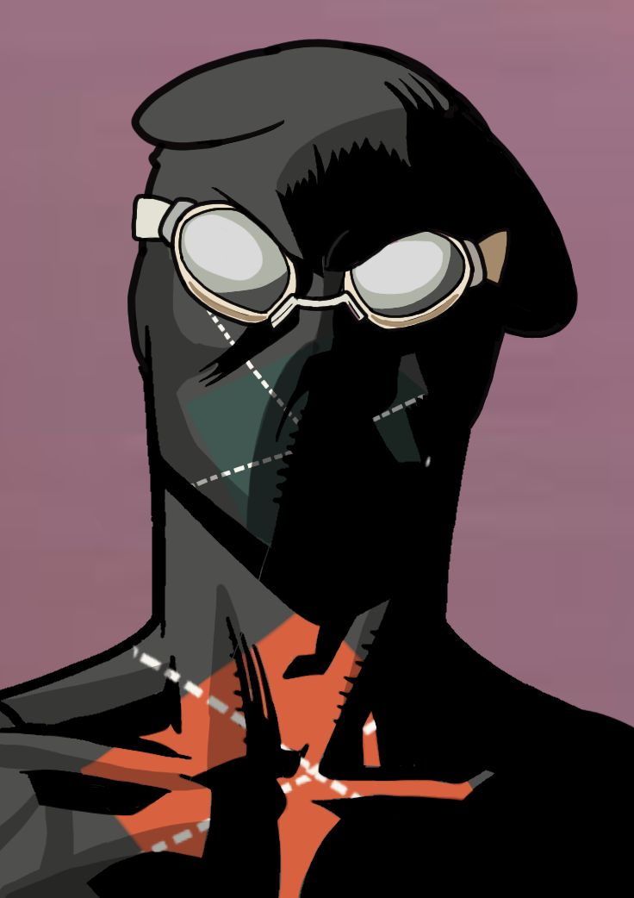

Ignacio Matamoros Carvajal

Datos generales
- Correo: icarvajalm@correo.uss.cl
- Ciudad: Calama
- País: Chile
- Edad: 22 años
Datos académicos
Ingeniería Civil Informática, Universidad San Sebastián
Semestre: 8°
Intereses académicos: Inteligencia Artificial
Descripción breve
Voy en 4to año de Ingeniería Civil Informática y me interesa crear soluciones útiles con tecnología. Me gusta seguir aprendiendo, mejorar en programación y enfrentar nuevos desafíos.
Listado de proyectos
- Desarrollo de una página web personal utilizando HTML y CSS.
- Creación de una interfaz básica para gestionar tareas académicas.